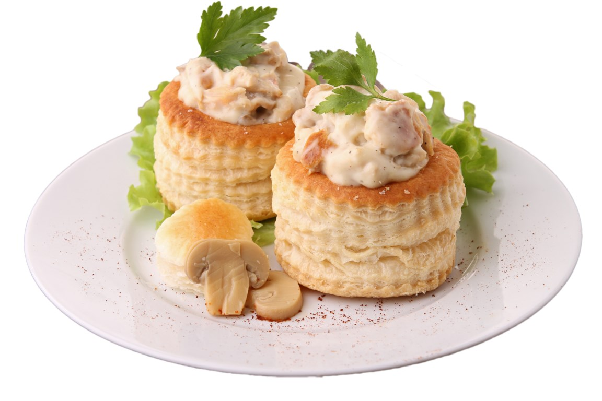

Vlaamse kost

Ingredienten
Voor de vulling:
- 2 kipfilets of 1 kleine soepkip
- 1 liter kippenbouillon
- 300 g gehakt (varkens- of gemengd gehakt)
- 1 ei
- 2 eetlepels paneermeel
- 200 g champignons, in plakjes gesneden
- 1 eetlepel citroensap
- 40 g boter
- 40 g bloem
- 100 ml room
- Zout en peper naar smaak
- Verse peterselie, fijngehakt (optioneel)
Voor de pasteitjes:
- 4 bladerdeegpasteitjes (vol-au-vent pasteitjes, te koop in de supermarkt of zelfgemaakt)
Bereiding
- Kip koken: Breng de kippenbouillon aan de kook. Pocheer de kipfilets of hele kip ongeveer 20 minuten in de bouillon, tot ze gaar zijn. Haal de kip uit de bouillon, laat afkoelen en trek in stukjes. Bewaar de bouillon voor later gebruik.
- Gehaktballen: Meng het gehakt met het ei, paneermeel, zout en peper. Rol kleine gehaktballetjes van het mengsel. Pocheer de gehaktballetjes in de kippenbouillon gedurende ongeveer 5 minuten tot ze gaar zijn. Haal ze uit de bouillon en zet apart.
- Champignons: Bak de champignons kort in wat boter met een scheutje citroensap om verkleuring te voorkomen. Zet opzij.
- Roux maken: Smelt de boter in een pan en voeg de bloem toe. Roer goed door en laat enkele minuten bakken zonder te kleuren. Voeg beetje bij beetje de kippenbouillon toe (ongeveer 500 ml) en blijf roeren tot je een gladde saus hebt. Voeg vervolgens de room toe en laat de saus even zachtjes pruttelen.
- Vulling toevoegen: Voeg de stukjes kip, gehaktballetjes en champignons toe aan de saus. Breng op smaak met zout, peper en eventueel een beetje peterselie. Laat alles zachtjes sudderen tot het goed warm is.
- Pasteitjes vullen: Verwarm de bladerdeegpasteitjes kort in de oven volgens de aanwijzingen op de verpakking. Vul ze met de kippenragout en serveer direct.